Lahore, Pakistan's second-largest city and the cultural heart of Punjab, sits far inland from Karachi's coastal moderation — and the 30-year data shows exactly what that difference in geography produces: a city with substantially more extreme heat, a winter that's warming almost as fast as its monsoon, and a climate profile that sits somewhere between Karachi's coastal pattern and Delhi's continental extremes.
Using the same methodology applied to Karachi, this report breaks down 30 years of historical reanalysis weather data (1995–2025) for Lahore, season by season, with a direct comparison between Pakistan's two largest cities.
All figures below come from ERA5/ERA5-Land reanalysis data (Copernicus/ECMWF), covering 1995 through 2025, visualized through our interactive Climate Trend Dashboard.
Annual Mean Temperature
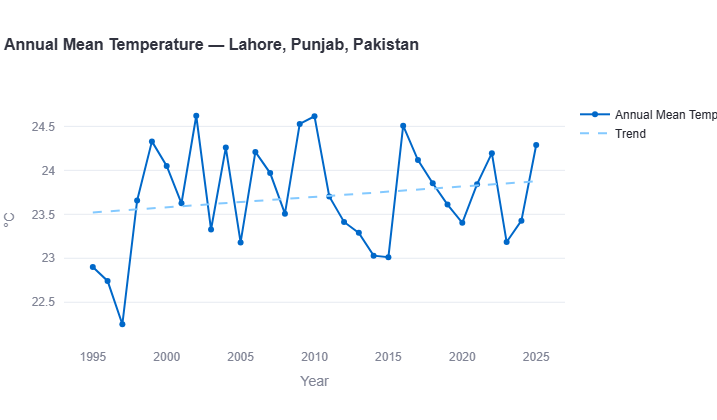
Lahore's annual mean temperature swings substantially from year to year, with a clear underlying upward trend. The record's coldest year is 1997, dropping to just 22.25°C, followed immediately by a sharp jump. Notable peak years — 2002, 2009, and 2010 — all reach approximately 24.6°C, the warmest points in the entire record, while a cooler stretch from 2011–2015 dips as low as 23.0°C.
Key Figure: Warming Rate
This matches Karachi's annual warming rate almost exactly (0.13°C/decade) — a genuinely interesting finding given how different the two cities are geographically. Whatever is driving Pakistan's broader annual warming trend appears to affect both a coastal megacity and an inland Punjab city at a similar overall pace, even though — as the seasonal and extreme-heat data below show — the *experience* of that warming differs substantially.
Extreme Heat: Days Above 40°C
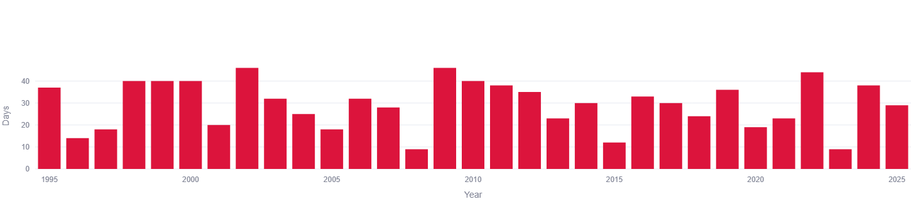
This is where Lahore's inland exposure shows up most dramatically. Where Karachi rarely exceeds 5 days a year above 40°C, Lahore regularly records 20 to 46 days per year — an entirely different climate reality. Peak years 2002, 2009, and 2022 all reach approximately 44-46 days, while milder years like 2008, 2015, and 2023 dip as low as 9-12 days. There's no single clean trend line here, but a consistently high, noisy baseline averaging roughly 28-30 days per year across the full record — Lahore's extreme heat isn't a rare event, it's close to a monthly occurrence across the hot season most years.
Annual Total Precipitation
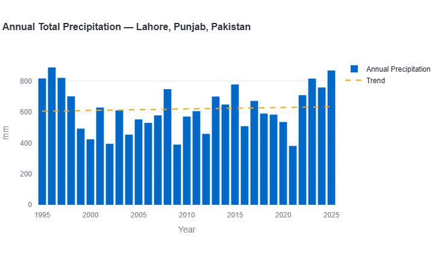
Lahore's annual rainfall is considerably more stable than Karachi's dramatic, volatile record. Typical annual totals fall in the 400–900mm range for most of the 30 years, with the trend line staying relatively flat, rising only modestly from around 610mm in the mid-1990s to roughly 640mm by 2025. The wettest year on record is 1997, reaching close to 890mm, while several years — 2001, 2008, and 2021 — dip to some of the driest totals in the record, around 390–430mm.
Key Figure: Precipitation Trend
A far more modest increase than Karachi's steep +88.7mm/decade climb. This is a genuinely important contrast: while Karachi's rainfall story is one of dramatic recent intensification, Lahore's has stayed comparatively steady across the same three decades — despite sharing a country and, per the annual temperature figures above, a very similar overall warming rate.
Seasonal Trend Breakdown
Breaking the data down by season — Winter (December–February), Pre-Monsoon/Hot (March–May), Monsoon (June–September), and Post-Monsoon (October–November) — reveals a pattern distinct from every other city in this series so far: Lahore's winter warms almost as fast as its monsoon.
Winter (Dec-Feb)
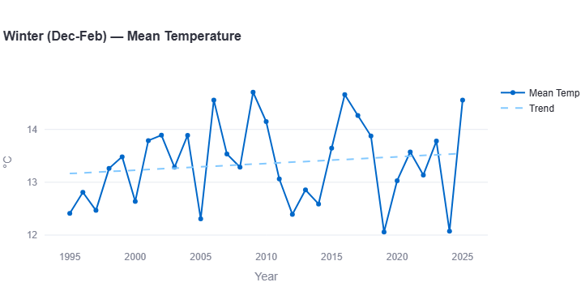
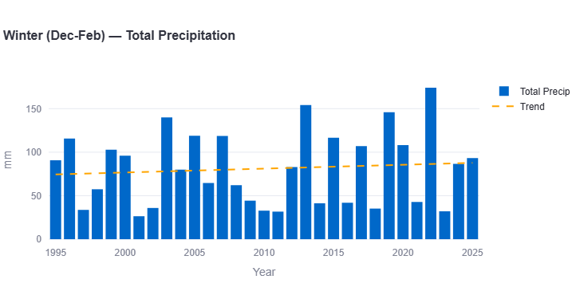
Winter temperatures show a clear, sustained rise — from a trend-line baseline near 12.9°C in the mid-1990s to roughly 13.5°C by 2025. Standout warm winters appear in 2009 (14.75°C, the record high) and 2016 (14.65°C), while 2019 and 2024 both dip to the coldest point in the record, around 12.05°C.
Key Figures: Winter
Warming rate: approximately +0.20°C per decade
Precipitation trend: approximately +3mm per decade (essentially flat)
This is the standout finding of the seasonal breakdown: Lahore's winter is warming almost as fast as its monsoon season, a pattern not seen in any other city studied in this series, where winter has consistently been the slowest-warming or even cooling season. Winter rainfall stays comparatively stable, generally between 30mm and 175mm, with 2022 recording the wettest winter on record at roughly 175mm.
Pre-Monsoon / Hot (Mar-May)
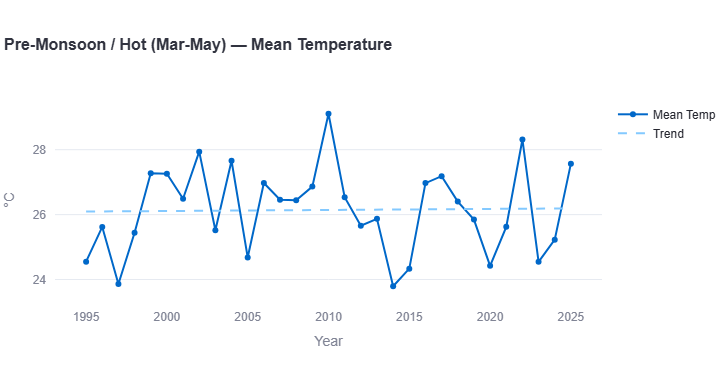
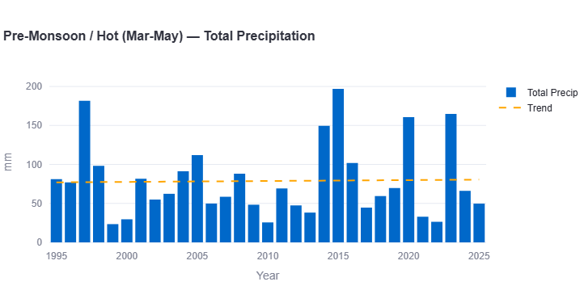
Pre-monsoon temperatures show the mildest trend of any season, staying close to flat around 26.1–26.3°C across the full 30 years. The record's most extreme point is 2010, spiking to 29.1°C, the hottest pre-monsoon season on record, while 1997 and 2013 both dip to the coolest points, around 23.8–23.9°C.
Key Figures: Pre-Monsoon
Warming rate: approximately +0.07°C per decade
Precipitation trend: approximately flat, minor increase
Pre-monsoon rainfall stays fairly stable around 75–85mm across most of the record, with 2015 standing out sharply at nearly 197mm — the wettest pre-monsoon season on record, and more than double a typical year.
Monsoon (Jun-Sep)
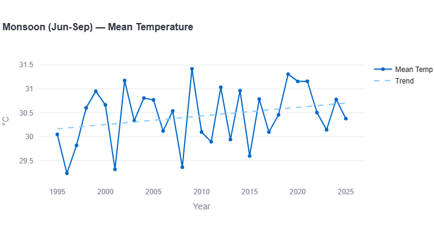
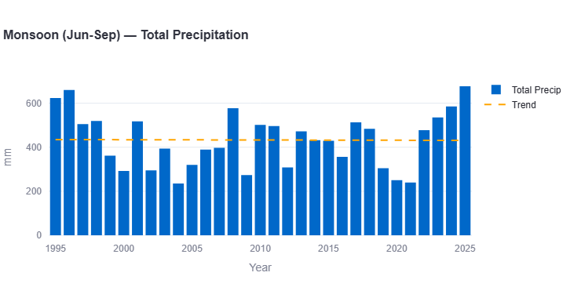
The monsoon season shows Lahore's fastest warming trend — rising from around 30.1°C in the mid-1990s to roughly 30.75°C by 2025. The record's warmest monsoon season is 2009, reaching 31.4°C, while 1996 recorded the coolest at 29.25°C.
Key Figures: Monsoon
Warming rate: approximately +0.22°C per decade
Precipitation trend: approximately flat, minor increase
This matches the pattern found in nearly every other city in this series: the monsoon season warms fastest. Monsoon rainfall itself stays relatively steady around 430–440mm for most of the record, with 2025 and 1996 both reaching the highest totals, close to 655–660mm, and 2020–2021 recording the driest monsoon seasons, around 240–250mm.
Post-Monsoon (Oct-Nov)
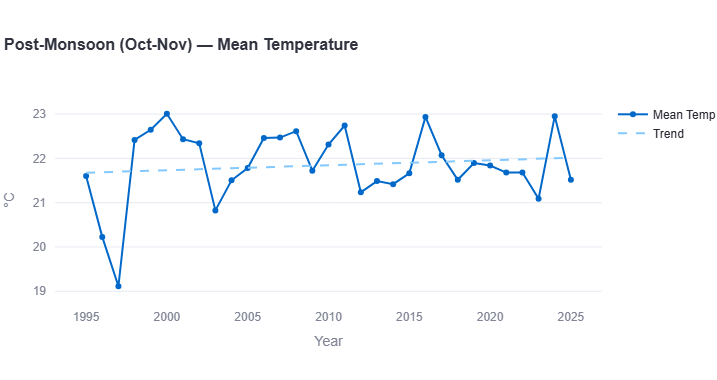
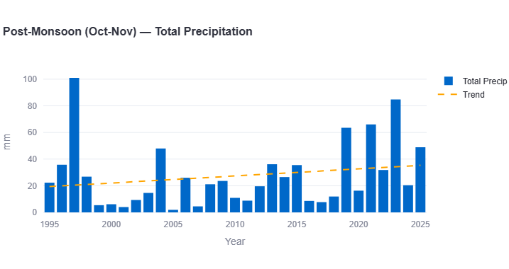
Post-monsoon temperatures show a modest but real rise, from around 21.7°C in the mid-1990s to roughly 22.0°C by 2025. The record's low point is a sharp dip to 19.15°C in 1997, while 2000 and 2016 both reach the warmest points, close to 22.9–23.0°C.
Key Figures: Post-Monsoon
Warming rate: approximately +0.10°C per decade
Precipitation trend: approximately +6mm per decade
Post-monsoon rainfall is dominated by one dramatic outlier — 1997, spiking to roughly 101mm, more than double any other year in this season's record — against an otherwise low, rising baseline that reaches its second-highest point, around 85mm, in 2023.
What This Means for Lahore
- Extreme heat is a defining feature of Lahore's climate, not an occasional event. With an average of roughly 28-30 days per year above 40°C, heat-health planning needs to treat extended, near-monthly extreme heat as the norm for the hot season — closer to Delhi's exposure than Karachi's.
- Winter warming this fast is unusual and worth monitoring. No other city in this series shows winter warming at a pace this close to its monsoon season — the drivers behind this specific pattern would be a valuable area for further local research.
- Rainfall has stayed comparatively stable, unlike Karachi's dramatic recent intensification. This means Lahore's water planning challenges are currently more heat-driven than flood-driven, a genuinely different profile from its coastal counterpart.
- Same country, same overall warming rate, very different lived experience. Karachi and Lahore share an almost identical annual warming rate, but Lahore's residents face vastly more extreme-heat days — a reminder that a single national or even city-level average can mask very different real-world exposure.
Lahore vs. Karachi: Pakistan's Two Largest Cities
With both of Pakistan's largest cities now analyzed using the same methodology, the comparison is genuinely revealing.
Karachi and Lahore warm at almost identical annual rates (0.13°C/decade for both) — but that's where the similarity ends. Karachi's coastal position keeps its extreme-heat days remarkably low (0-5 per year), while inland Lahore regularly faces 20-46 days per year above 40°C. Rainfall tells the opposite contrast: Karachi's precipitation is intensifying dramatically (+88.7mm/decade, driven by an increasingly volatile monsoon), while Lahore's has stayed comparatively steady (+10mm/decade). And where Karachi's winter is its most stable, slowest-changing season, Lahore's winter is warming almost as fast as its monsoon — a genuinely distinct pattern between two cities in the very same country. Read the full Karachi climate trend report for the complete picture.
How Lahore Compares Across the Region
With six South Asian cities now analyzed using the same methodology, Lahore's profile sits in an interesting middle ground — sharing Karachi's overall warming pace, but Delhi's exposure to extreme heat.
| Metric | Karachi | Delhi | Dhaka | Colombo | Kathmandu | Lahore |
|---|---|---|---|---|---|---|
| Annual warming rate | +0.13 | ~+0.15 | ~+0.30 | ~+0.15 | ~\u22120.04 | ~+0.13 |
| Annual precip trend (mm/dec) | +88.7 | ~+35 | ~\u2212140 | ~+65 | ~+50 | ~+10 |
| Fastest season | Monsoon | Post-Monsoon | Monsoon | Monsoon | Monsoon | Monsoon |
| Extreme heat days (\u226540\u00b0C) | 0-5/yr | 20-50+/yr | ~0/yr | 0/yr | 0/yr | 20-46/yr |
All rates in °C/decade unless noted. Lahore is the clearest example yet in this series of a city whose annual-average warming rate alone doesn't tell the real story — its extreme-heat exposure places it much closer to Delhi's risk profile than to Karachi's, despite matching Karachi almost exactly on the headline number.
Search any South Asian city and see its own temperature, rainfall, and monsoon trends, built from 30 years of data.
Open the Interactive Dashboard →Data Source & Methodology
All figures in this report are derived from the Open-Meteo Historical Weather API, built on ERA5 and ERA5-Land reanalysis data produced by the European Centre for Medium-Range Weather Forecasts (ECMWF) through the Copernicus Climate Change Service. Trend rates are estimated by reading the linear regression trend line plotted on each chart across the full 1995–2025 period; where a chart did not display a printed decade-rate figure, the value given here is a closely reasoned visual estimate, marked "approximately."
Seasonal boundaries follow the standard South Asian meteorological convention: Winter (December–February), Pre-Monsoon/Hot (March–May), Monsoon (June–September), and Post-Monsoon (October–November).
As with any reanalysis dataset, figures represent a grid-cell average (roughly 9–25km resolution) rather than a single-point station reading, and may differ from any individual weather station's direct measurements.
Frequently Asked Questions
How many extreme heat days does Lahore have per year?
Based on the 1995-2025 record, typically 20-46 days per year with maximum temperatures at or above 40°C, averaging roughly 28-30 days annually — far more than coastal Karachi, and comparable in scale to Delhi's continental exposure.
Is Lahore warming faster than Karachi?
No — both cities show an almost identical annual warming rate of approximately 0.13°C per decade. Where they differ sharply is extreme heat exposure and rainfall trends, not the headline warming pace.
Is Lahore's winter really warming as fast as its monsoon?
Yes, based on this data — winter shows an estimated warming rate of approximately 0.20°C per decade, close to the monsoon season's 0.22°C per decade. This is unusual compared to other South Asian cities studied, where winter is typically the slowest-changing season.
Is Lahore's rainfall increasing?
Only modestly — an estimated 10mm per decade, far below Karachi's steep 88.7mm per decade increase over the same period.
Which season is warming fastest in Lahore?
The monsoon season (June-September), at an estimated 0.22°C per decade — consistent with the pattern found across most other cities in this series.